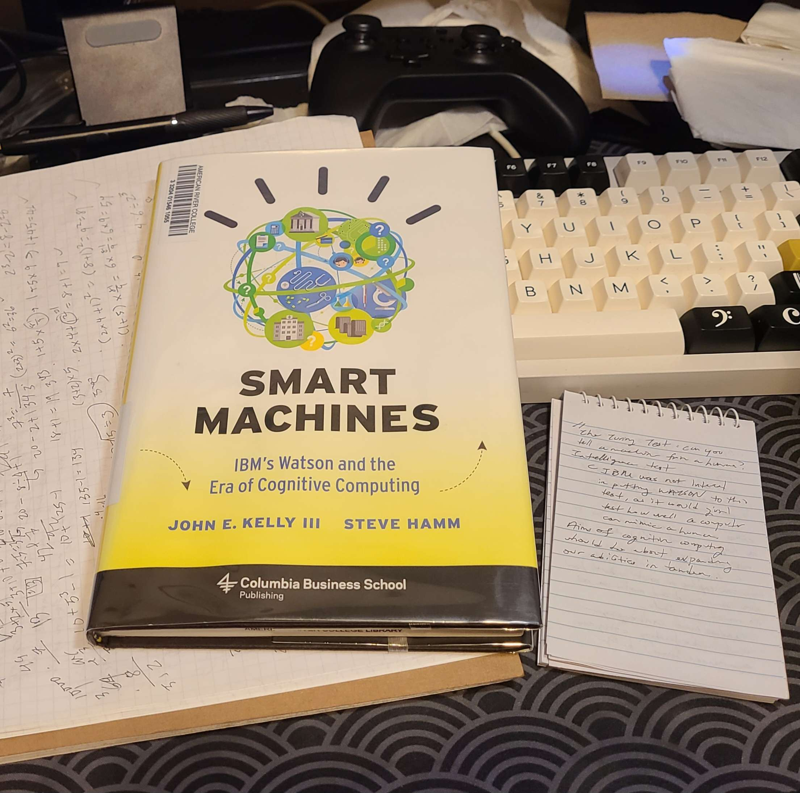

Smart Machines
2024-02-23
I recently finished reading a book called "Smart Machines", by John E. Kelly and Steve Hamm.
To be honest, it didn't hold my attention consistently from the beginning to end, but it's a decent primer on cognitive computing for less technical readers like myself.
I've already dropped if back off at the ARC library, but I want to mention some interesting points I've picked up from the book:
- Incremental vs Disruptive Progress
This was in reference to technological progress as a whole. Basically, incremental progress is when things are improved in steps. We could say it's more consistent progress. Disruptive progress, then, is basically an entire leap forwards (going with the steps analogy). The authors assert that disruptive innovations are what really propels tehcnological progress. Are you familiar with Moore's Law? We're facing the likelihood of some stagnation in technology as we're creeping ever closer to the physical boundaries of what we can do with transistors. Perhaps we're turning to artificial intelligence as a means securing some kind of push whenever we do encounter that boundary...
- Static vs Dynamic Learning
My notes are really garbled underneath this topic. The way I understood it, though, is that static learning is more like "knowledge" - the retaining of fixed information. This is actually what Watson primarily showcased in the Jeopardy challenge. What we're hoping to achieve with greater success in the cognitive computing field is dynamic learning - the ability to not only pick up information, but adapt it accordingly to our needs.
One of the most relevant topics to dynamic learning is language, and I'm not just referring to the language differing between regions and cultures, but the language that professionals use in their respective fields. For example, the language used by computer scientists are going to be different from the language used by medical practicioners. A gap we hope to bridge with artificial intelligence is the ability to allow information to flow between these professional fields so that we can all make sense of things.
- The Whole Data vs Information Thing
I already alluded to this: but there's a difference between information and data. A simple way of putting it is that information is simply data that can be understood by humans.
The authors actually wrote that the 2008 Financial Crisis was a failure of information. We had a lot of data, but our insitutions could not properly pull the "right" data to create information. Dire consequences followed as a result. This is something else that cognitive computing could help us with.
- Data, Data, Data...
The book was published in 2013, and according to its published figures, less than 1% of data collected across sources have ever been analyzed. Some of this is a problem at a systemic level, but a lot of it as a problem at a hardware level.
Hypothetically, if our hardware can handle the amount of data that is being funneled through our systems, there are four other considerations on the management of big data:
- Volume - self explanatory, I think.
- Variety - different data types that require different methods of analysis, like videos, geospatial data, and speech.
- Velocity - the speed that data gets accumulated; consider real-time analysis compared to storing huge amounts of data and parsing through a giant backlog.
- Veracity - the quality and accuracy of the data and its source(s).
- It Takes 20 Watts to Power a Human Brain...
Do you know how a computer compares? The answer is: it doesn't - it doesn't even come close (as of now, anyways). Just for fun though, Watson required 85,000 watts at full throttle during its Jeopardy trial.
As a result, there's actually a debate among IBM engineers which surprised me: a debate on the feasibility of incorporating analog signals in computing. But neurosynaptic chips have been very difficult to design and implement, and will pose a challenge for an indeterminate amount of time to come...
Something probably worth remembering: the issue these engineers are debating are ways to circumvent the "von Neumann bottleneck".
- The Urban Organism
One strong prediction the authors have about the future of cognitive computing lies in cities, or the establishing of "a serious scientific theory of cities". Cities are the sources of many problems, but they very likely hold the means of providing a platform for many solutions.
Similar to the concept of dynamic language introduced earlier in the book, cities have many areas of human specialization - there's transportation, logistics, public infrastructure, urban law enforcement, private operations... so on and so forth.
An especially interesting concept that was brought up in this section on cities is the idea of "an operating system for cities". Without context, it may sound a bit silly - but is that not what the purpose of an operating system really is? To manage and direct various processes so they can work in harmony? Personally, I found this to be the most interesting part of the book.
But I gotta wrap the post up here. I have midterms next week, though I want to share a lil' book haul in my next post.